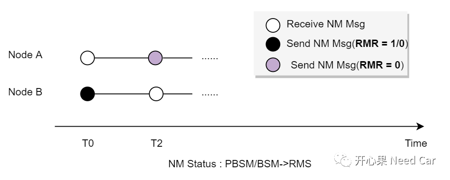
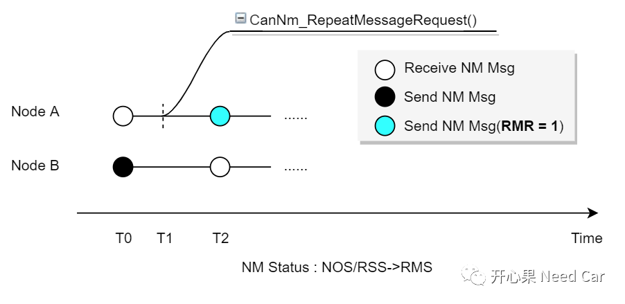
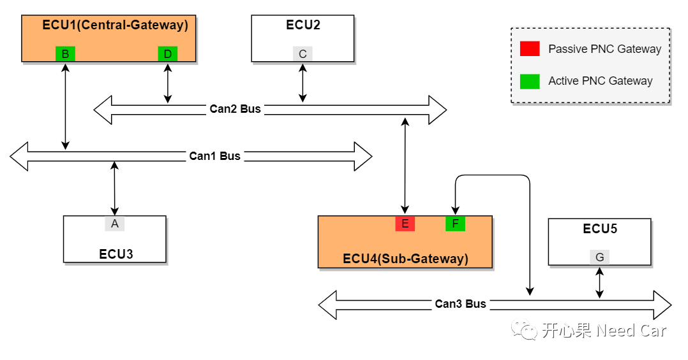

开心果 Need Car · 2022-09-11T17:44:00+08:00 · 微信原文
关于Autosar网路管理的问题，我聊过很多，有兴趣的可以往前找找。比如：Autosar网络管理：ERA/EIRA问题QA等。本文，继续和大家死磕Autosar网络管理的问题。
1、节点被动唤醒，会发网络管理报文吗？
2、对于网关节点，ComM Channel配置为Passive PNC Gateway，对应的PNC Bit何时置位？
1、节点被动唤醒，会发网络管理报文吗？
关于被动唤醒源和被动唤醒的解释，前文聊过，可以参考Autosar网络管理：主动唤醒源/被动唤醒源与网络主动唤醒/被动唤醒的关系。何为被动唤醒？简单理解：无需承担网络唤醒责任，只对“自己”负责。比如：节点A收到节点B的有效网络管理报文，节点A确保自己正常唤醒网络即可。但是，节点B可能需要确保网段内的其他节点被唤醒，以便于建立正常的通信。一般，网关节点是网段内第一个被唤醒的节点。
如上假设：节点A属于被动唤醒，问题：节点A可以发送网络管理报文吗？答：分情况，需要看节点A是否是被动网络节点，即：CANNM_PASSIVE_MODE_ENABLED == TRUE ？
第一、CANNM_PASSIVE_MODE_ENABLED = TRUE，说明节点A的网络类型是Passive Mode，节点A也就没有外发网络管理报文的能力。
第二、CANNM_PASSIVE_MODE_ENABLED = FALSE，说明节点A的网络类型非Passive Mode，节点A有发送网络管理报文的能力。
注意：这里不要和Node Detection功能混淆，Node Detection功能打开，虽然也能使得节点外发网络管理报文，但是时机不同。CanNmNodeDetectionEnabled = TRUE时，节点在NOS（Normal Operation State）或者RSS（Ready Sleep State）状态下，内部请求进入RMS（Repeat Message State）状态时，节点外发网络管理报文会置位RMR Bit，请求网段内的其他节点也进入RMS状态，协调节点网络状态。当节点被动唤醒，由BSM（Bus-Sleep Mode）/PBSM（Prepare Bus-Sleep Mode）进入RMS状态时，发送的网络管理报文，RMR Bit不置位。
（1）节点A收到节点B的网络管理报文（RMR = 1/0），节点A网络状态由PBSM/BSM模式进入RMS状态时，则RMR Bit=0，如下所示：

（2）节点A网络状态由NOS/RSS进入RMS时，如果是节点A主动请求进入RMS状态，RMR Bit = 1，如下所示：

提示：内部请求，是指主动调用CanNm_RepeatMessageRequest()接口。
2、对于网关节点，ComM Channel配置为Passive PNC Gateway，对应的PNC Bit何时置位？
ComM Channel配置路由类型时，说明我们是在讨论网关ECU，只有ECU具有多个物理Channel时候，才有Gateway的讨论。本小节讨论ComM Channel配置Passive PNC Gateway时，PNC#n的置位问题。
问题：“ECU4::E节点的路由类型配置成Passive PNC Gateway，当ECU4::E节点收到ECU1::D或者ECU4::F节点的网络管理报文（PNC #n置位），PNC #n关联ECU4::E节点，ECU4::E节点发送的网络管理报文中，PNC #n是否需要置位？”，网络拓扑示意如下：

往期精彩回顾